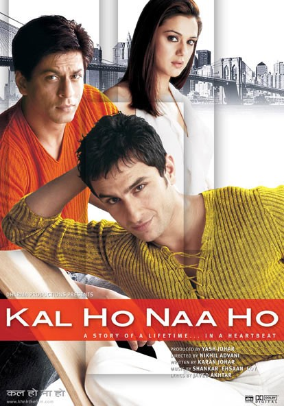
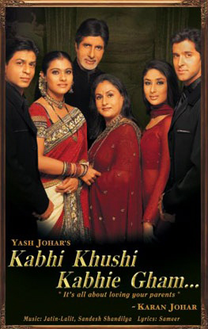
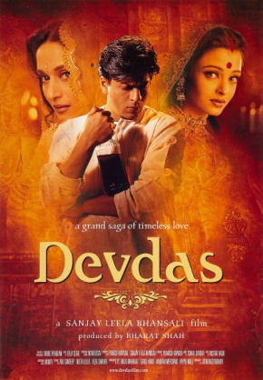
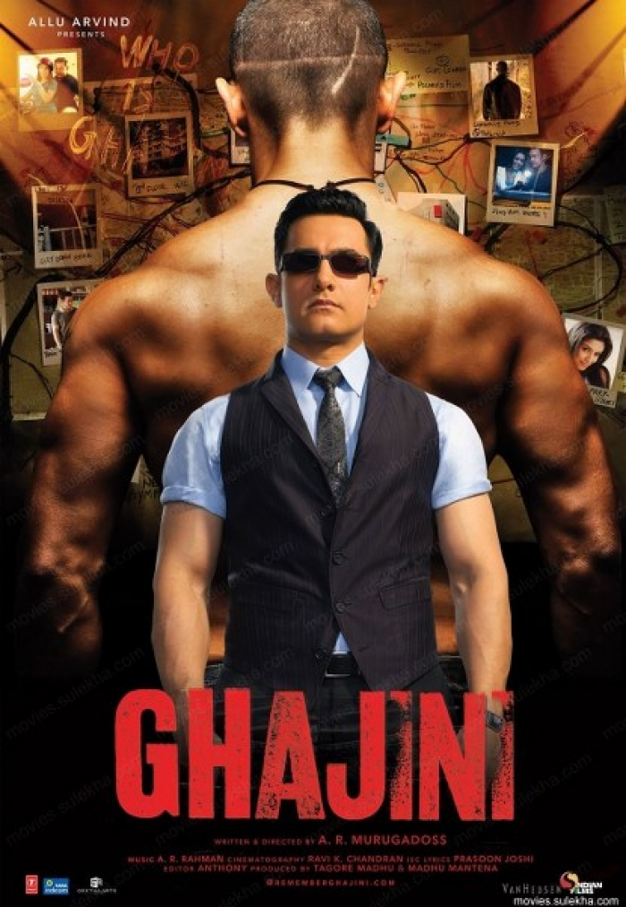
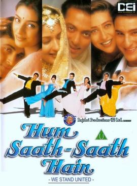
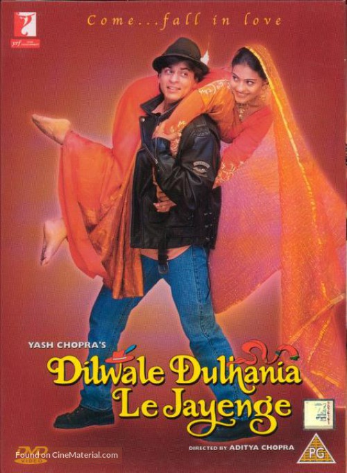
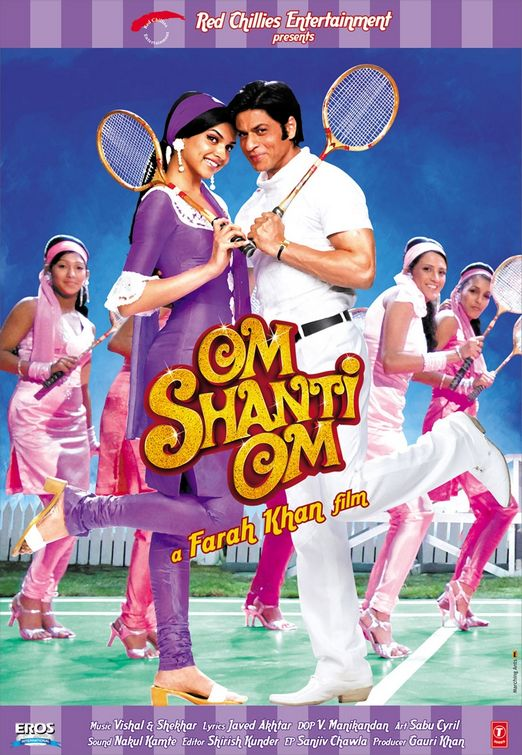
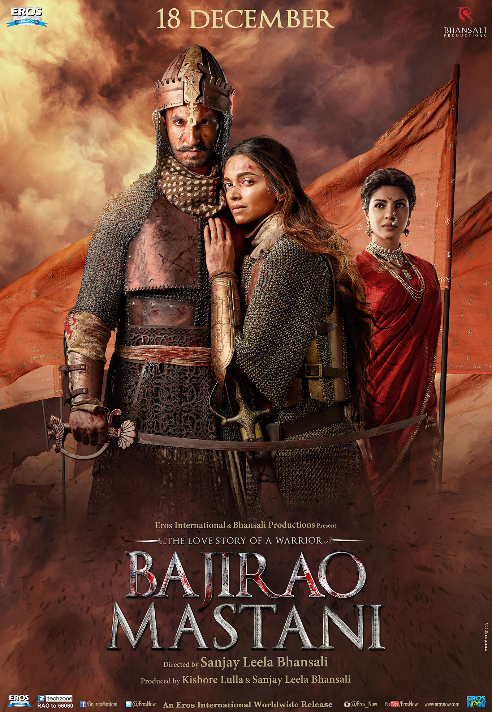

Kal Ho Naa Ho (2003)
Spoiler! Here's a movie where you’ll be curled up and crying like a baby at the end. What I really like about this movie is that it took place in NYC so I felt connected to Shahrukh Khan in a weird way. The scenes and songs that took place on the Brooklyn Bridge and DUMBO? Bless.
So Naina (Preity Zinta) lives with her widowed mother, Jenny (Jaya Bachchan), two younger siblings, one adopted (Gia), and her father’s mother, Lajjo. Naina is pretty pessimistic about life so her life revolves around books, her family problems, and her best friend Rohit (Saif Ali Khan). Aman (Shahrukh Khan) moves in next door and immediately annoys Naina with his beautiful positive and bubbly personality. He pushes himself into her family anyway because they all love him, finally some sunshine around the house. He also helps Lajjo get over her nasty attitude towards Jenny. So taking a step back, Lajjo hates Jenny because she thinks her son committed suicide because Jenny adopted Gia. One day when things got really bad, Gia ran to Aman's home for help. Previously Aman had accidentally found out something and now he reveals that Lajjo’s son actually had an affair with someone else and they had a daughter, but that woman refused to take care of the daughter, so Jenny decided to take Gia in. Lajjo realizes how ridiculous she had been and Jenny took all her insults for years because she didn’t want her to think ill of her dead son. Aman also helps turn around their family business for the better. All this beautifulness he’s brought into Naina’s family, Naina begins to appreciate how wonderful and precious he is and soon falls in love with him. Rohit has been falling in love with Naina, while she was falling for Aman. She blurted out " I love Aman " and Rohit held his feelings and told her to go confess. He calls Aman (who was the one to encourage Rohit to confess to Naina) to update him. When Aman thinks Nina is about to confess her love for him, AMAN SAYS HE’S ALREADY MARRIED EVEN THOUGH YOU DARN WELL KNEW THROUGHOUT THE MOVIE THAT HE WAS IN BIG TIME LOVE WITH NAINA SO WHAT THE HECK AMAN WHAT ARE YOU DOING??
See more
Aman's mom overhears the conversation between him and Naina and asked him why he lied, and he says that he loves her so much but how can he hand over his weak heart? We then find out that Aman is a terminally ill patient and the woman he said he was married to was actually his doctor and a friend. The reason he lied was because he doesn’t want them to have a relationship only for him to die and leave her heartbroken. Instead, he works with Rohit (yeah remember Naina’s bestfriend, he’s kinda in love with her too) to have them fall in love with each other. After being extremely heartbroken, Naina begins falling for Rohit (WHAT A FAKE) but then she finds out Rohit had been getting help to win her over and she thinks the whole thing was a game, and gets really upset. Now this is the part where I cried a river, Aman pulls out Rohit’s diary and pretends to read from it, but really he’s speaking from his own heart and confessing his love. Naina thinks those words are Rohit’s and falls for him even more. Eventually, Naina and Rohit get engaged, and they have an engagement party. Aman was dancing and singing for them like the angel that he was. He has a heart attack in the middle of the celebration and crawls out. He's taken to the hospital where he's told that he can't strain himself anymore. So one day, Naina encounters Aman’s doctor holding the arms of her actual husband and she’s confused. Aman’s doctor's husband thinks Naina and Rohit know about his health so he reveals Aman’s secret in the conversation. Naina figures out that Aman had lied to her the entire time and actually had loved her so she confronts Aman with angry tears and Aman (who walked out of the hospital as soon as he heard Naina foundout) swears he’s happy (…while dying and watching his two best friends in love with each other yeah ok Aman). So we watch Rohit and Naina have their wedding celebrations, where Aman and Naina continously exchange looks with teary teary teary eyes. Scene then changes to Man on his death bed wishing everyone a good bye and these good byes shattered my heart into just about a million pieces. He says goodbye to his mother, Naina, Rohit, Naina’s siblings and so on. Aman’s actor, Shahrukh Khan, plays every death scene, sad scene, love scene so beautifully I don’t understand what humankind did to deserve this talented beautiful man. He also has a conversation with Rohit where he iconically says "You get her in this life, but next lifetime shes mine". But anyway, Aman goes to sleep and fast forward to 20 years, where Naina is talking to her little sister about how much Aman had impacted their lives (her sister was probably too young to remember all the details of this angel who had walked into their lives long ago). Rohit joins the two with their own daughter, and they’re all a cute little family reminisicing about Aman. I cried twice writing this review because I had to rewatch some scenes to write this… so Reader…these tears are your fault.See less
Kabhi Kushi Khabhie Gham (2001)
Want to cry about 10 times during a movie? You're looking at the right movie! Rohan(Hrithik Roshan) was going about his day, missing his brother after he won’t a cricket game when he overhears his two grandmothers having a secret conversation. He stood in the doorway while they were talking about how Rohan was adopted and he can never find out what happened to the family in the past (he was standing at the door the entire time. I still question how they didn’t see him). So now Rohan asks them to tell everything and they do. So throwback to ten years ago, they were throwing a party for Dilwali (by the way they’re crazy rich) and Rohan’s dad, Yash (Amitabh Bachchan) sees Naina (Rani Mukherjee), who is his friend’s daughter. He wants her to marry his older son Rahul (Shahrukh Khan), who shows up to the party after returning from school from London in HELICOPTER (they’re rich). So Naina starts hitting on Rahul who dodges her statements like a pro. After, he gets a talk from his dad where he’s told that he should never bring shame onto the family. Fast forward, Rahul falls deeply in love with Anjali (Kajol) who comes from a very humble and poor family. Meanwhile, Yash has his sons’ fates figured out, marrying off Rahul and sending Rohan to boarding school (cause they’re rich). Rahul marries Anjali anyway (heck yea!!!) and they’re both kicked out of the house. So this is where Rohan is done hearing the story. He books a flight to London, where Anjali, Rahul and their child live. He finds them, while also finding Anjali’s sister, Pooja (Kareena Kapoor). He tells her his secret mission to bring his family back to India where they can reunite. So Pooja brings back Rohan to her home, where she pretends he is a friend who needs a place to live to complete his studies. Rahul doesn’t recognize his own brother because its been so long, while Rohan has teary eyes. He also used “Yash” to cover his identity, which reminded Rahul of their father. After some time, Anjali figured out who Rohan was (before his own brother did…HOW). At a school event, Rahul’s son recited advice Rahul had given Rohan a few years ago, and Rahul, along with other building up evidence, realized that Rohan was indeed his brother. Rohan begs Rahul to go back to India, but Rahul refuses (I mean… they kicked him out for marrying his love…) Pooja convinced Rohan to invite his parents to London to visit him since they think he went for school. See more
They came over and everyone’s upset that they were tricked into meeting up at the mall, except Nandini (Jaya Bachchan) who was overjoyed to see Rahul. They soon find out Yash’s mother passed away and they all go back to India. Rohan tells them Yash’s mother’s wish was for the family to be united so they attend her funeral together. Nandini and Yash begin to drift apart because Nandini wants the family together but Yash is still upset Rahul somehow shamed the family. Rohan and Pooja trick Rahul into speaking to Yash where they get over what happened all those years, just like that in one conversation. Yah invites them back into the house and they hold a huge celebration for Rahul and Anjali and a wedding for Rohan and Pooja (yeah they were in love for most of the movie, adds more to the one big family theme of the movie I guess).
The summary sounds sorta lame and dry but the music and tears and basically everything had me and I’m sure just about everyone else choking in tears. I’ll make sure I show this to my kids, and their kids and their kids and their kids and their kids and so on and on because I’m going to live forever. See less
Devdas (2002)
Devdas(Shahrukh Khan) and Paro(Aishwarya Rai) were childhood best friends and Devdas was from a very wealthy family while Paro was only middle class. Devdas went away for a couple of years to study and Paro being the extra girl that she was, lit up a diya lamp to resemble him coming back. She was weirdly obsessed with the flame on the lamp, like she would never let it extinguish. She had a whole song about it too, just before Devdas came back from London. Devdas went to see Paro before he went to see his mom after ALL THOSE YEARS. Everyone is convinced that the two will get married and be in love forever. SIKE! Little did everyone know that Devdas’s scheming sister in law reminded his mother of Paro’s mothers lineage of nautanki performers. Mind you, nautanki performers were just dancers and singers operatic theatre performances… so why did she link that to being lower class… Anywho, it clearly worked on Devdas’s mother because when Paro’s mother came to her to discuss the marriage, Devdas’s mother publicly shamed her (but lets be honest, she was probably just still upset that Devdas went to see Part before her. It was probably never about her mother’s lineage). In anger, Paro’s mother was like “word?? I’ll show you, I’ll get my daughter to marry even a RICHER guy”, so she set up an arranged marriage between her young daughter and some evil looking forty year old widow with three kids (mother of the year!).
When Devdas realizes his dad was against his love for Paro, he gets upset and like the spoiled brat that he was, leaves his family’s home after leaving Paro a letter saying he never loved her (because apparently thats the best way to get someone over you..). So he takes refuge in a brothel, where Chandramukh(Madhuri Dixit) was a performer who sang beautiful songs and wore such beautiful clothes (I love her). So anyway, at first he’s totally rude to her and she puts him in his place, and he realizes how much he misses Paro after spending some days there. He visits Paro, its her wedding day and she’s tight as heck because he left with some crappy “explanation”. He treats her like crap throughout entire conversation. Did you think shed love you and leave her wedding after you did that.. so confusing..
See more
Anyway, she gets married and he returns to the brothel where he becomes an insane alcoholic :/ meanwhile Paro realizes her husband only married her to mother his children cause he still loves his late wife (…I knew that before they said it). So Devdas’s family is all sad and asks Paro to tell him to stop drinking… even though he started drinking because of his love for her? And its all really his mom’s ego’s fault? Next, his dad dies, more drinking and Paro is like darn now I gotta try harder to save him. She visits the brothel where she becomes friends with Chandramukhi and invites her to dance with her at the Durga Puja at her house. She goes and they have a great time and the best choreography and song in the history of Bollywood was created from that scene. Chandramukhi gets extremely slutshamed once Paro’s in-laws find out she’s also a prostitute, so they swear they’ll never let Paro out the house ever again. Meanwhile Devdas is going nuts with the alcohol, especially with a friend who’s a bad influence. When Devdas starts throwing up blood and knows he’s about to die soon, he thought it was a great idea to hitch a ride to Paro’s place. Back at Paro’s place when someone casually brings up a weird guy laying in front of the house, Paro asks for the name and WOOP its Devdas. So she’s running through the entire mansion while pepple are trying to stop her and she’s dramatically knocking over furniture and expensive things rich people have in their rich people hallways, her father-in-law says “close the gates!” And just as Paro was about to make it through the gates, they close on her, and Devdas takes his last breath the diya lamp’s flame is extinguished.
Now I didn’t realize how bratty and lame Devdas was so I cried a lot! I’ll probably cry anyway if I were to rewatch the movie but maybe more for Paro because her life sucked and some of those tears would be angry tears for the crap Chandramukhi had to deal with. That last breath Devdas took was really iconic though…
See less
Ghagini (2008)

I know I know, the year is 2008, so how exactly is this a classic? Well guess what, all movies where Aamir Khan acts, are classics. It’s never a simple Bollywood love story, so you’re going to want to watch this or relive this movie.
Sunita is a medical researcher who wants to study the mind of a criminal, Sanjay (Aamir Khan). Sanjay has amnesia, he forgets things every 15 minutes. Sunita wants to learn about him on her own because she was denied access to the case.
We find out that Sanjay uses photographs, notes, diaries and tattoos to remind himself of his mission to avenge Kalpana’s (his wife) death. He tries to kill everyone who was associated with her death, and especially the man responsible for it all, Ghagini. No one really knows about Sanjay’s past so they assume he’s a terrible guy who’s just out to kill poor innocent people. LITTLE DO THEY KNOW! So a cop breaks into Sanjay’s apartment and knocks him down. He begins digging through his diaries, and find one of two. In the first one, he finds out this tatted up evil looking guy was actually a very successful chairman of a telephone company. In the diary, written by Sanjay, he talks about how he needed to put up a billboard above Kalapani’s apartment. She’s a struggling model and her agency thinks Sanjay was trying to make moves on her? Weird thought process, but they urge her to act like his girlfriend and Sanjay is extremely confused. She thinks this was all a prank and goes along with it hoping her agency will give her better chances next time. Sanjay finally meets with her ready to confess, but he actually ends up falling in love with her. They both fall in love and he proposes to her later on. Just as the cop was about to read the second diary, the one holding the key information, Sanjay wakes up and ties up the cop because he thinks he was about to get killed. Sunita who totally didn’t know what she was getting into, found Sanjay’s apartment, saw his plan to kill Ghagini, took his two diaries and freed the cop. Sanjay’s memory is wiped again and sees two intruders and runs them out. Sunita thinks Ghagini is the good guy, and warns him about Sanjay’s plans (good job idiot, you didn’t even read his diaries what are you DOING).
See more
Ghagini then goes to Sanjay’s apartment and tears up all his memories, so that left Sanjay at square one, all confused. When Sanjay somehow finds out that Ghagini was warned by Sunita, he goes to her dorm to kill her. She calls the cops and has him arrested. And THENNNN she decides to read his second diary, where its revealed that Kalpana was traveling somewhere for her modeling assignment and she sees about 25 girls being trafficked. She helps all of them with some army soldiers on board. The diary abruptly ends and Sunita did more research. Turns out Ghagini was actually the leader of this trafficking, so when he finds out who she is, he goes to her home to kill her with his goons. Sanjay comes home to see Kalpana stabbed, and finally hit on the head with a rod, which killed her. Ghagini then hit Sanjay, which caused his amnesia. And thus the mission began. Sunita comes to her senses and realizes she was stupid, and went to the hospital where Sanjay was being held, and told him everything. They flee under cops’ vision and work together to complete his mission of killing Ghagini and his henchmen. While Ghagini was fleeing, Sanjay lost his memory. Ghagini then took this chance to stab Sanjay and taunted him by reminding him of the terrible way he killed Sanjay’s wife and his plan to kill Sanjay the same way. Overtaken with anger, Sanjay is able to gather his stregnth and actually kill Ghagini the way Ghagini had killed his wife.
The ending was extremely sad. The scene shows Sanjay sitting outside of an orphanage he had named after Kalpana. Sunita gives Sanjay a gift that will constantly remind him of Kalpana, and Sanjay imagines her by his side and is finally at peace.
See less
Hum Saath Saath Hain(1999)
Now this movie is well known by everyone. If you don’t know this movie then… I have no words. I went to sleep with the cassette (back when cassettes were a thing) instead of a stuffed toy. The movie was just little problems with a huuuuge family. By huge I mean mom, dad, their three sons and daughter, then their children’s spouses, their children’s spouses’ parents and of course the extra family members. Lets just say it would be extremely difficult to get all of them in a selfie even with a long selfie stick.
So, Ramkishan’s and Mamta’s children are from oldest to youngest, Vivek who is shy and humble, also the stepchild of Mamta, Prem (Salman Khan) who has a lot of respect for his older brother, Sangita who is a delight and loves bringing the family together, and Vinod (Saif Ali Khan) who is lazy and the extremely playful one. Vivek marries Sandhna, Sangita marries Anand, Prem engages Pretti, and Vinod engages Sapna (Karisma Kapoor). There are so many songs in between every single engagement party and wedding celebration, its really wild. Half the movie was basically a musical. Also, Vivek invites his entire family to go on their honeymoon… what.. taking the family a bit too far no..? ok.. So after all the fun is done, Ramkishan appoints Vivek the managing director his company. Now the father of Sapna feels like his daughter won’t get hereditary money and starts complaining to the father of Pretti (who really didn’t care about the money). Meanwhile, Mamta’s three evil friends manipulate her into questioning Ramkishan’s choice to hire Vivek, especially after Sangita, Anand and their child are thrown out of their home by Anand’s brother. Mamta begins thinking that Vivek might throw out his own brothers, but he’s literally a quiet humble angel? Mamta brings this up with her husband, and tells him she wants equal shares for all her children.
See more
Vivek finds out and gets upset, and he has every right to. He was wondering whether or not Mamta ever really loved him as her own son. So he and his wife leave (good, they deserved better anyway). Vinod also follows them because he dislikes his mom’s decision. When Prem comes back from London, he first visits Vivek where he finds out Sadhna is pregnant (makes Mamta look even more evil). Prem realizes he will have a lot of responsibility now and tells Pretti’s dad he can’t marry her. Mamta begins to regret her decision. Meanwhile, Anand’s brother’s company is struggling without Anand so they bring him back, and they move back into the home. The reason Anand was invited back was because the company was struggling, not because his brother realized he was being a terrible doofus. But that causes Mamta to think brothers aren’t so bad after all, she also finds out Sandhna was having a baby so more of a reason to invite them back home and apologize? Apparently babies fix everything. Thrown out of your home? Have a baby. The family is reunited and everyones happy. Prem weds Pretti and Vinod weds Sapna ON THE SAME DAY. This family really has a thing for doing everything together.. Goals but not really goals honestly. See less
Dilwale Dulhania Le Jayenge (2005)

So we have a pretty regular degular Indian family living in London. The father, Baldev is very traditional, and misses his homeland. The mother hangs with her two daughters, Chutki and Simran (Kajol). Simran is obsessed with her imaginary lover, she’s always imagining some weird boyfriend and just is in love with love in general. Baldev has plans to marry Simran off to his best friends son. Simran is totally cool with it because why not marry a complete stranger? So she asks her father to let her tour Europe before getting married off and hes like “okay since you’re weird enough to be okay with getting married off with no questions asked, sure”. Then we’re introduced to Raj, (Shahrukh Khan). He goes to Baldev’s store, which was closing and tells him he needs to buy something very urgent, which turned out to be beer. Baldev permanently hates Raj now.
So now Raj and Simran just happened to be in the same train cart where he tries hitting on her. She’s really into her book and ignores him after telling him she doesn’t do parties. Guess where they meet again? At a party. The two missed a few trains, and Simran gets drunk and bothers Raj while he’s trying to make sure she doesn’t get lost or fall off the face of earth. They have some fun and fall in love. BUT! Simran reveals that she has an arranged marriage waiting for her and Raj is like what…Once they both return home, Simran tells her mom everything while her dad overhears everything and is mad as heck. Raj on the other hand tells his dad about Simran who’s totally cool and tells him to not return home without the love of his life. Simran is flown to India where the celebrations are being planned and she’s upset about her life. Raj flies over in hopes of being with her 5ever. His plan was to become friends with the guy Simran was supposed to marry, enter the household, and win over Simran’s dad. Someone once said “It’s like going to someone else’s birthday party and hoping you will figure out a way to make it your own if you are nice enough to everyone” (truuu).
See more
The plan actually begins to work though, Kuljeet becomes friends with Raj. Baldev recognizes Raj right away, from the beer incident. Funny thing is, Kuljeet’s sister starts falling for Raj and so when Raj’s dad flies to India to help his love life out (what a great dad), he accidentally accepted a marriage offer between Kuljeet’s sister and Raj because he confused the two girls (not so great dad). Simrans mom spots Raj and Simran having fun and encourages them to flee with one another, but Raj wants to be all moralistic and do things the right way? Raj and Baldev begin to find common grounds and bond over their love for India. Even Raj’s dad is like bro flee with Simran to London but ofcourse Raj is like nah. Baldev finds a picture of Raj and Simran from their vacation in London and he FLIPS! Everyone finds out, and Raj feels terrible and apologizes, then is on his way to the train, back to London (you barely tried fighting for your love..) but at the train station, Kuljeet is mad so he and his goon friends grab sticks to beat up Raj. Simran is begging her dad to let her go with him, but he refuses because he “is the kind of man who even holds his farts in because he has the authority to — talk about letting a whole person out” (Buzzfeed). Just when the train is about to leave, Baldev had an ephiphany where he realized what love was? and lets go of her hand. She starts chasing the train and actually catches up. And since that second, running trains and lovers have been an iconic scene. If it appears in any other movie, you automatically get DDLJ vibes. See less
Om Shanti Om (2007)

I LOVE THIS MOVIE. I feel like I didn’t appreciate it enough as a kid because I didn’t fully understand the concept of reincarnation, but now I am grown!! I get it!! And Im here for it!!
So! Om Prakash (Shahrukh Khan) is a junior artist in the 1970s and is in love with Shanti Priya (Deepika Padukone). He watches a premier of her movie one night with his best friend Pappu. He gives a drunken speech, pretending that he won a Filmfare award for best actor. Later, he gets the chance to act in a movie with Shanti, where he saves her from a fire scene. One day on set, he overhears Shanti and the producer Mukesh having a conversation. He discovers that the two are in a secret marriage and Shanti is actually pregnant. Mukesh tells Shanti to come on the set another day where he’ll reveal to everyone about the marriage and publicly announce the pregnancy as well. When Shanti goes, he actually traps her on set and sets it on fire. She begs to be let out, and he walks away. Om who was visiting the set that day, tries to save her but was pulled out of the building by the explosion. When thrown outside, he was hit by car owned by Rajesh Kapoor, a successful actor who was driving his pregnant wife to the hospital. Rajesh took Om to the hospital as well, when he realized what he had done. At the hospital though Om dies due to his injuries, while thinking about what Shanti had gone through, and Rajesh’s wife gave birth to a boy named Om Kapoor (nicknamed O.K). Om Kapoor grows up to look EXACTLY like Om Prakash (surprise! He was reincarnated). I was wondering why no one noticed the similarity.. but Om Prakash’s mother notices the resemblance between her dead son and O.K so she waits outside his gate one day and freaks him out. He was extremely startled. He subconsciously inherits Om Prakash’s memories and has a fear of fire. However, he’s living life lavishly now, a well known actor. When he actually won the Filmfare award, he gave the same speech he had given in his drunken state from the previous lifetime. An older Pappu watched O.K give this speech on t.v and was also startled.
See more
So, when O.K was introduced to Mukesh by his father, he recalls everything from his past life. This leads him to hate Mukesh, and reunite with Pappu and his mother from his previous life. They all plot for a way to make Mukesh confess his crime publicly. Using his fame status, he convinces Mukesh to restart the movie he was creating before he had killed Shanti. Makes agrees, and throughout that time, O.K and his friends plotted creepy ways to make Mukesh think he was being haunted by Shanti’s ghost. This worked out well because O.K had gone through a hiring process to find a girl who looked ilke Shanti. Lucky for him, there was a girl named Sandy who was Shanti’s doppleganger (what are the chances of that you ask? In Bollywood chances are 100%). Sandy appears here and there to scare Mukesh. Finally, during the music launch of the movie, O.K sings a revealing song that reminds Mukesh of his crime. Throughout his song, Sandy dressed up as Shanti and taunted Mukesh through the set. Mukesh was terrified until he saw Sandy accidentally cut herself and bleed. He was about to confront O.K when he was hit by the chandelier. Once he awakens, O.K confronts him about his crime but is taken back when he finds out Mukesh knows about Sandy. At that moment “Sandy” shows up and talks about how even though she actually survived that fire from years ago, Mukesh came back to make sure she was dead. When he realized she wasn’t, he buried her alive. There was no way Sandy would have known these details? So everyone is in confusion. Makes was about to shoot who he thought was Sandy but he fights O.K and just when O.K was about to kill him, Sandy chillingly says “Don’t. You don’t want this murder on your hands. The chandelier will do it” and right then the chandelier drops, killing Mukesh. The real Sandy ran through the doors with Pappu and asks O.K if he was ok (haha). This is when O.K realizes it was Shanti’s ghost there the entire time after Mukesh had initially gotten hit by the chandelier.. BOYYY I was SHOOK. Shanti turns around and gives O.K a look filled with old friendship love and she disappears.
Also I need to mention this. That ceremony for O.K? Before he met Mukesh? Where ALL the Bollywood actors and actresses appeared and danced and sang? When will we ever get something like that ever again? NEVER, hence why Om Shanti Om will always have a huge place in my heart.
See less
Bajirao Mastani (2015)
The movie sucked. Watched it last year sometime in January and I still want my money back.